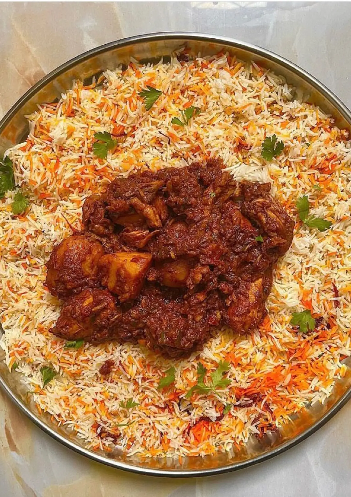

Swahili Biryani
Back Home

A savory Swahili Chicken Biryani
This delicious mean is courtesy of the Coastal regions of Mombasa in Kenya. This mean can be enjoyed along side rice, naan, chapati just to name a few
Ingredients
- 270 g basmati rice
- Whole spices:2 green cardamom’s,1 black cardamom,
small cinnamon stick,2 cloves and 1 bay leaf
- 1/4 oil/ghee
- 4-5 large onions
- 2 medium tomatoes (can use 1 heaped tbsp of tomato paste instead) for marination
- 1/2 Salt
- 1/4 tsp turmeric
- 2 tsp kashmiri chilli powder
- 1 tbsp if crushed coriander seeds
- 2 tbsp Shan Bombay biryani masala
- 1 -2 finely chopped green chillies
- 1 tbsp grated ginger and garlic
- Handful chopped mint & coriander leaves
- 3 tbsp thick yogurt
- Leaves FOR FINISHING: saffron,rose water,extra biryani masala,coriander and mint
Cooking Instructions
- Marinate the chicken with the ingredients listed above and rest for 30mins(up to overnight);wash and soak basmati rice for 30 mins,bloom saffron strands over the ice water(helps it to gently release its flavor)
- Heat oil+ghee and add onions. Fry until golden brown(this will take about 10 mins)set aside some of it for garnish.
- Add marinated chicken & fry for 5 mins. You can add a splash of water if the masala is sticking.
- De-seed and blend tomatoes add it to the masala. Cover and cook for 10 mins(taste and adjust the salt)
- Boil 4cups of water along with 1tbsp salt &while spices in another pot. Add soaked rice into it and boil for 5-6 mins. Drain & set aside
- Once masala is cooked through layer the rice over it(optional) drizzle saffron and rose water,remaining fried onions and extra biryani masala on top
- Cover and seal the pot with a tight lid & lower the flame down. Let it stay in low flames for 15-20 mins.
- Switch flame off & let it rest for another 10mins then open and garnish with fresh coriander and mint.